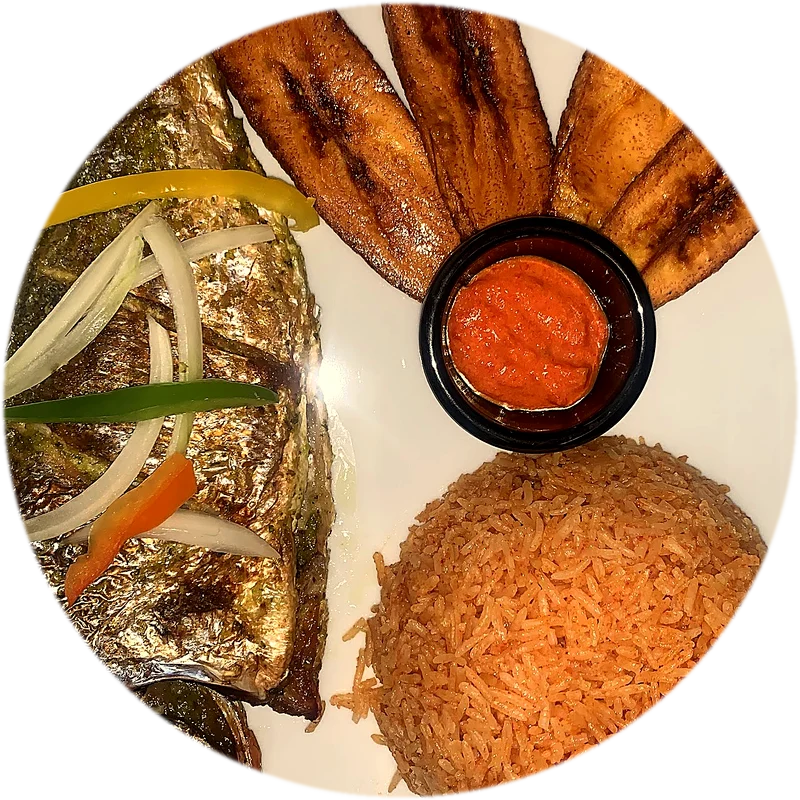
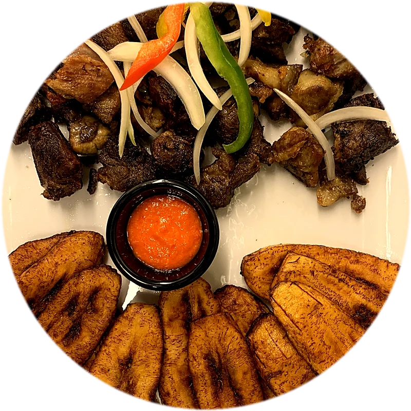
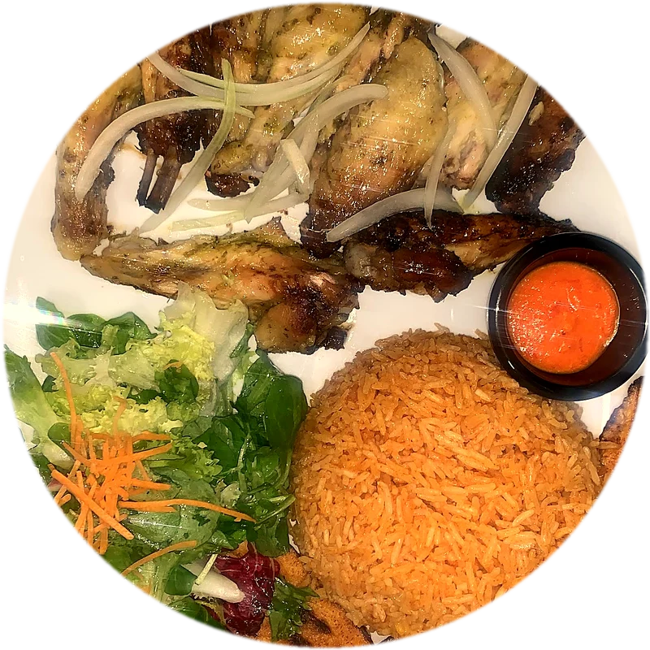
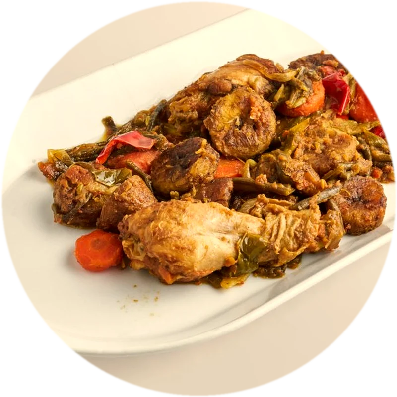
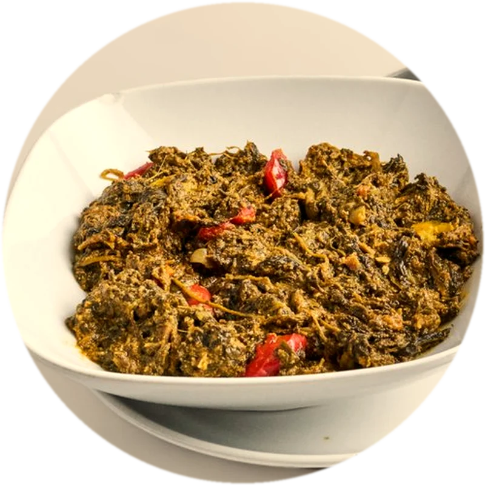
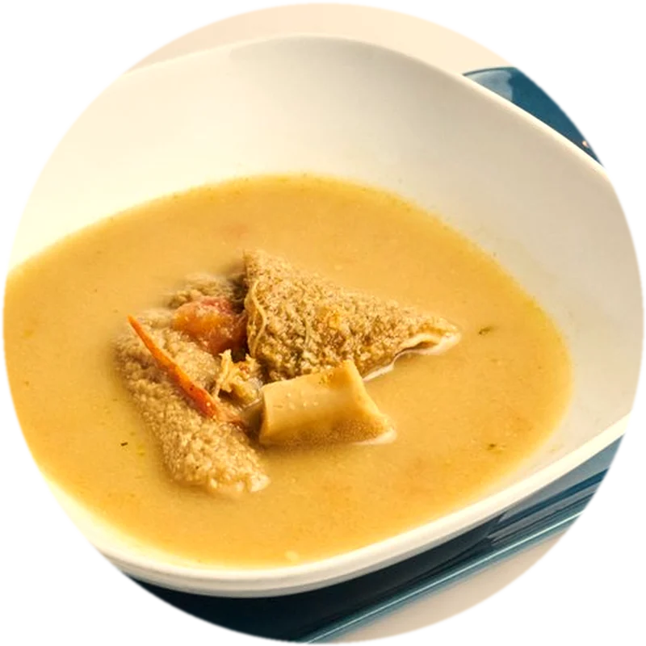
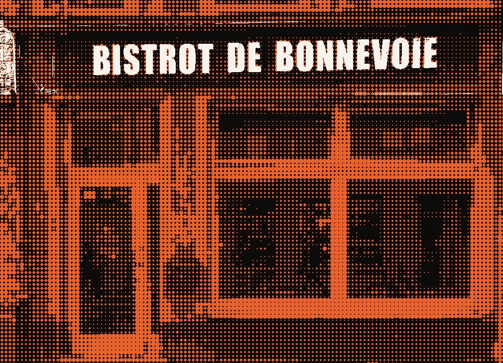

Restauration africaine · 29, rue de Bonnevoie, Luxembourg-Gare
Venez partager un moment de convivialité en famille et entre amis
Dorade grillée

Viande de chèvre frite

Viande de bœuf, sauce cacahuète, légumes
Ailes de poulet grillées

Pilons de poulet, sauce oignons, olives
Morceaux de poulet et légumes

Sauce gombo, viande ou poisson
Sauce épinard, viande ou poisson

Viande de chèvre

Accompagnements : riz rouge, attiéké, plantain, chikwang, piment.
African Food, Bar, Club and AfroMusic
Partage • Foi • Solidarité
